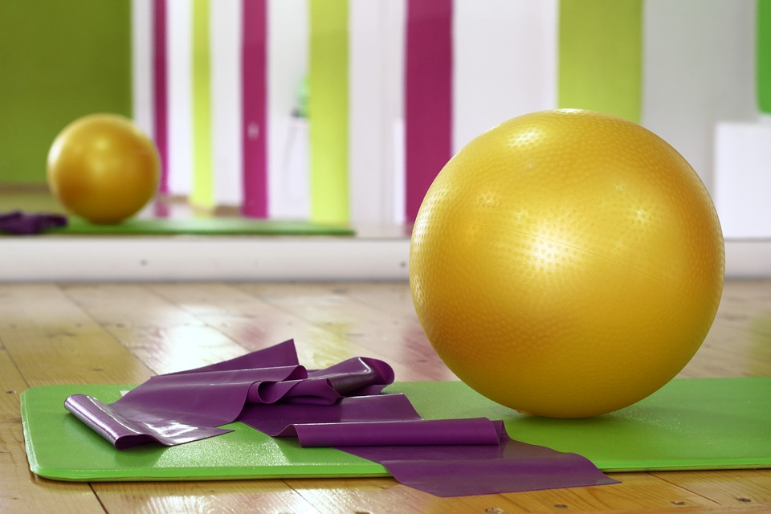

About Us
Operating Times
- Weekdays: 6.30am -20.30pm
- Saturdays: 08:30 - 12:30pm
- Sundays: Closed
As part of our commitment to your health and fitness, we encourage you sign up to make use of our fully equipped fitness centre. As studies has shown regular exercise stimulates brain cell development and relieves stress. With membership fees starting from as little as R60 a month, you have no reason not to get working on increasing your energy and sculpting that perfect summer body. Let us help you to reach your health, energy and fitness goals!
The gym is open to students, staff at Monash and also Maragon schools, Bastion schools and to everyone interested. The admission to the gym is based entirely on membership. The periods for membership are monthly, semi-annually, quarterly, half yearly and annually. Registration is done online or at the gym. Monash Gym SA has a variety of exercises.
Facilities include:
Abs,Press Ups,Pull and Dips Classes,
Treadmills
Free and Pin-loaded Weights
Olympic Lifting Bars
Boxing Station
Spinning Bikes